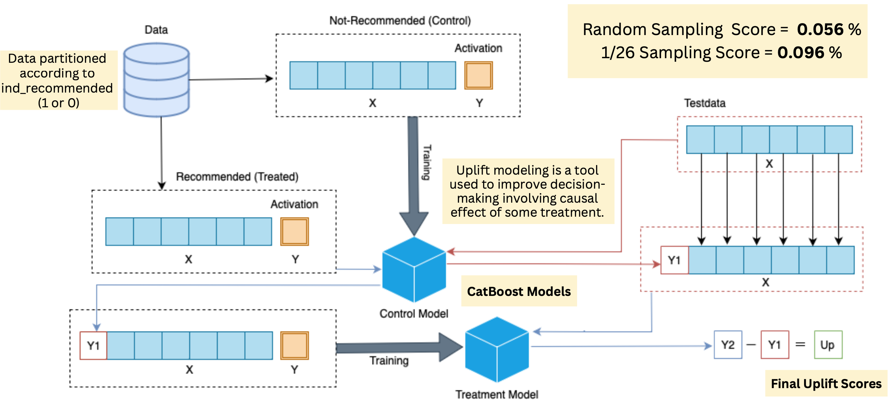
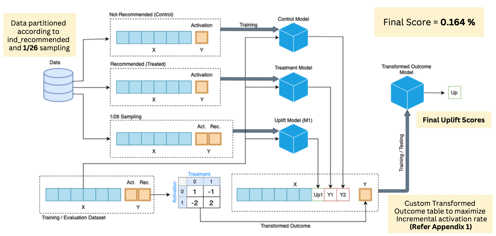
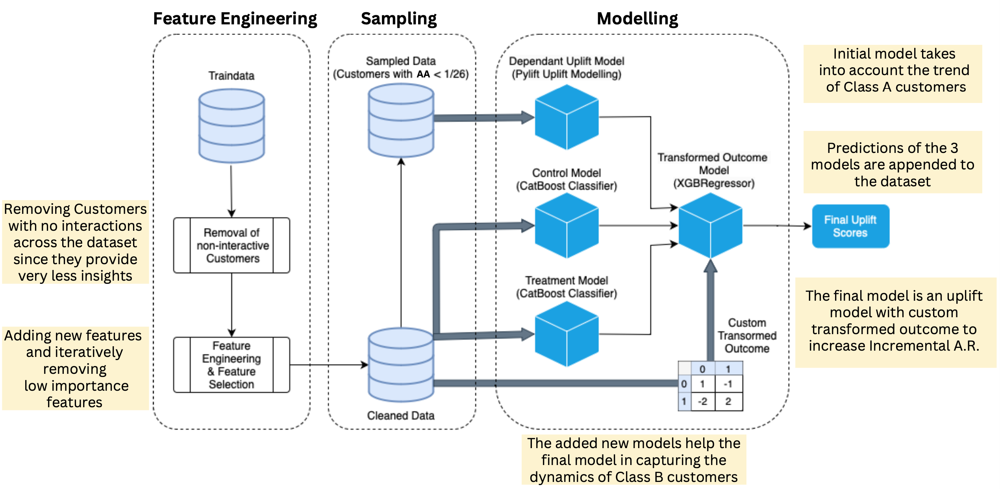
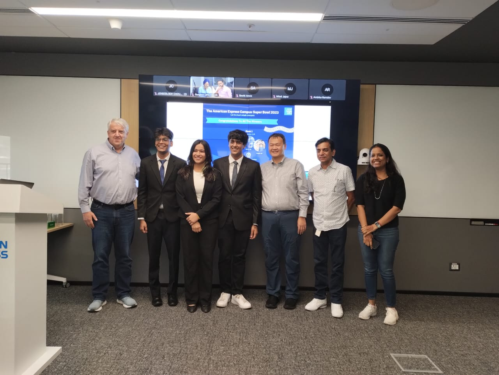
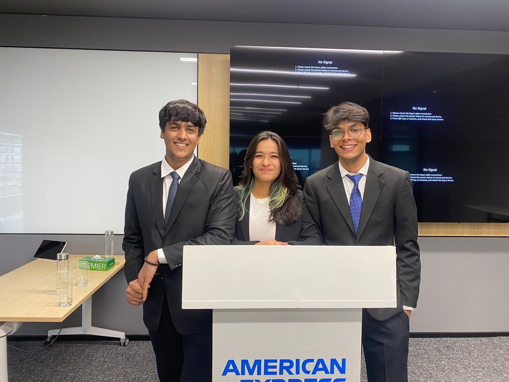
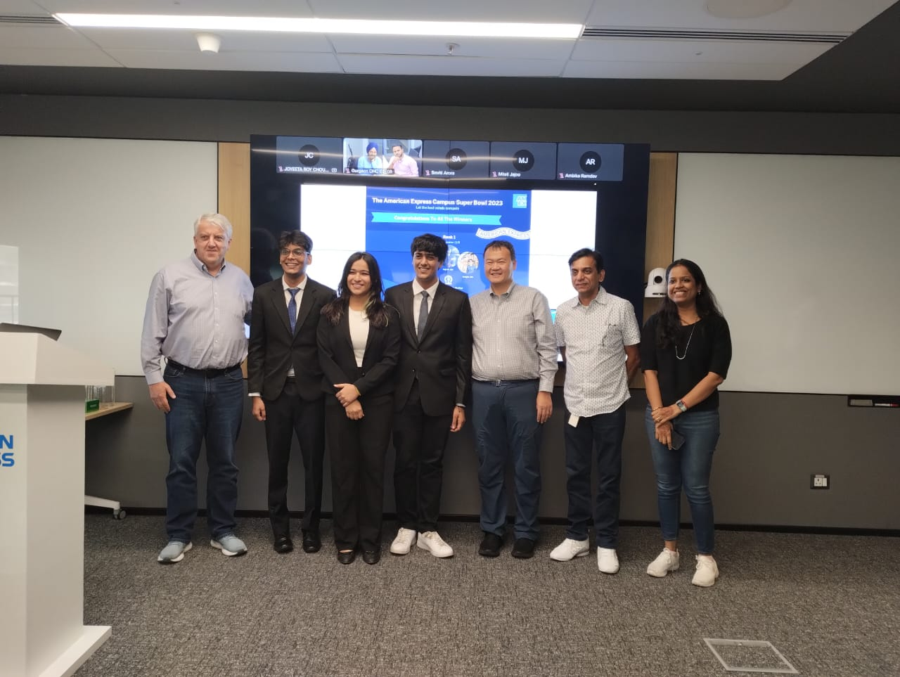
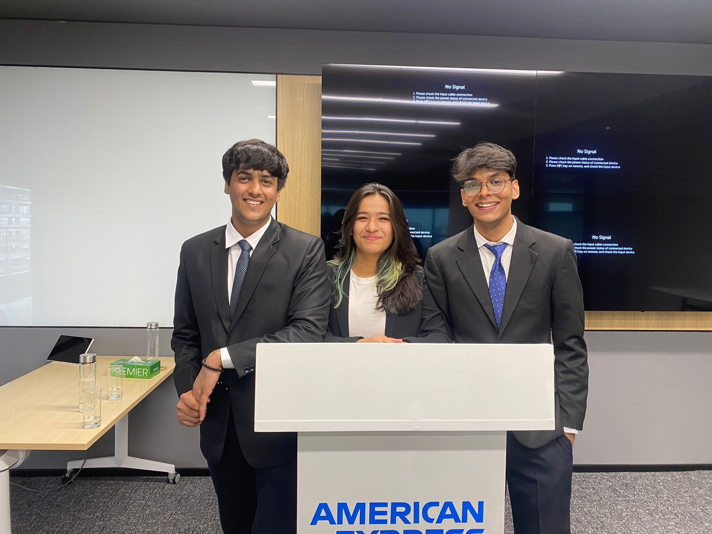

Introduction
I recently participated in the American Express Campus Super Bowl challenge, a nationwide three-month-long competition for students who are into analytics and data science. More details can be found here.
The challenge was all about the Merchant Recommendation system for American Express. It's like a friend who suggests new places to shop(a successful recommendation is when a customer shops at a recommended place within 30 days). But here's the twist - customers can also find and shop at new places on their own, without any recommendations. So, our task was to find those places for each Customer that would get the most 'Incremental Activations': the places that a customer would only have found if recommended, which means fewer places found organically.
Having previously never worked on recommendation systems, I found this a pretty exciting problem and was keen to take it on. Stick around as I share more about this in the following sections of this blog.
Overview
The entire process consisted of three rounds:
The first round was a qualifier round, where we had to do significant work: building the end-to-end model pipeline given a dataset of 462k customers with over 12 million total entries. Rank the top 10 merchants for each Customer to maximize the incremental activation rate. The top 50 teams were selected for the second round.
The second round was an additional round, where we had to use our model pipeline to make predictions on a new dataset so that the model's robustness could be checked over varying data. The top 10 teams were selected for the final round.
The final round was a presentation round, where we had to present our approach and results to a panel of judges from American Express.
Model Building
Building the model was indeed the most crucial part of our journey. The unique aspect of this challenge was to exclude organic recommendations and focus on maximizing the incremental activation rate.
Our approach was divided into three major components:
1. Feature Engineering and Selection Process
We started by creating and selecting features that would provide the most valuable insights for our model. Here are some of the critical features we engineered :
- Login Frequency: This represents how frequently a customer logs in. It gave us an idea of the Customer's engagement level.
- Click-to-Spend Ratio: This measures the efficiency of clicks in driving merchant spending. It helped us understand the Customers' spending behavior.
- Transaction Conversion Rate: This reflects the strength of a customer's intent to purchase based on logins per transaction. It was useful in gauging the Customer's purchasing power.
- Missing Data Indicator: This indicates the percentage of missing data for a data point. It was crucial in handling missing data during the model-building process.
2. Sampling Technique
We divide the customer base into 2 categories based on their spending potential so that the model can better understand the dynamics of the customer base. The sampling was done in 2 ways:
- Base sampling: Remove all customers who have not been recommended nor interacted across the entire dataset even once (Non - interacting Customers)
- Custom 2 cateogory sampling: Removing the Customers whose Average Activation is less than (1/26) Average Activation of a Customer = Total Activations of customer / Total Merchant Interaction of Customer
3. Model development:
After comprehensively trying various approaches ranging from classification models for 4 different classes of interaction to regression models using transformed outcomes - our final approach was a custom two-model dependent uplift modeling.
Uplift modeling is a technique that predicts the incremental impact of a treatment (such as a direct marketing action) on an individual's behavior. It is a powerful tool for marketers because it allows them to identify the customers who are most likely to respond positively to a marketing action.
Our approach was derived from the scikit-uplift's documentation. It is based on the classifier chain method - initially developed for multi-class classification problems. The idea is that if there are different labels, you can build different classifiers, each of which solves the binary classification problem. In the learning process, each subsequent classifier uses the predictions of the previous ones as additional features. This method uses the same idea to solve the problem of uplift modeling in two stages.
We prepared a preliminary model, where we trained two different classification models for the control and treatment groups, where the score from the control model was appended to the features in the treatment model. As discussed earlier, the uplift score was the difference between the probabilities of the two classification models. The model development process can be understood through the following diagram:

After the preliminary model was developed, we incorporated our sampling techniques to improve the model performance. Instead of taking the difference between the dependent models, we appended all the final values from the models to the second step of the model, where a regression model was fit on the transformed outcome to calculate the incremental activation rate(uplift value). The process of model building can be very well understood through the following diagram: The process of model building can be very well understood through the following diagram:
 4. Summary of the model:
The entire model pipeline can be understood through the following diagram:

Conclusion
After going through a 3-month process, understanding uplift-modeling from the ground up, trying, testing, failing, and finally presenting our work to the judges, we were declared the second-winners of the American Express Campus SuperBowl Challenge.They also called us to their Banglore office for a day, where we interacted with the team and presented our work to some of the senior leaders from the AmEx New York office. It was a great experience, and I am grateful to American Express for giving me this opportunity and for the prize: Apple iPad.
 


